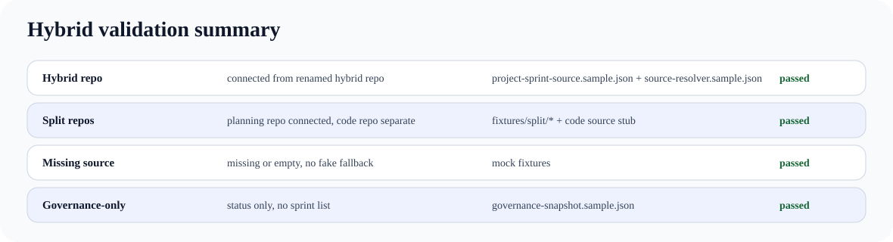

Hybrid-first test repo with repo-first source resolution, split-repo fixtures, governance-only snapshots, and trace-separated events.
| Scenario | Expected | Evidence | Verdict |
|---|---|---|---|
| Hybrid repo | connected from renamed hybrid repo | project-sprint-source.sample.json + source-resolver.sample.json | passed |
| Split repos | planning repo connected, code repo separate | fixtures/split/* + code source stub | passed |
| Missing source | missing or empty, no fake fallback | mock fixtures | passed |
| Governance-only | status only, no sprint list | governance-snapshot.sample.json | passed |
